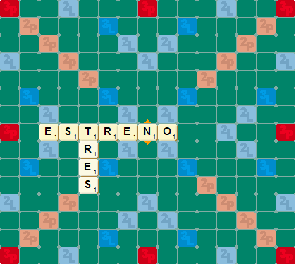
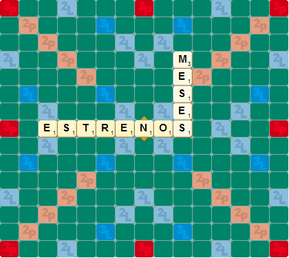

¿Cómo jugar Scrabble?
SCRABBLE® es un juego de palabras cruzadas para 2, 3 o 4 jugadores (en general se juega de a 2).
Consiste en formar sobre el tablero palabras que se crucen entre si, igual que en los crucigramas,
haciendo uso de fichas marcadas con una letra y un número (su valor). Los jugadores deben tratar
de conseguir la mayor puntuación posible, utilizando sus fichas con habilidad; es decir,
colocándolas de manera que obtengan el mayor partido tanto de los valores de las fichas como
de las casillas con premio del tablero.
Contenido
1 tablero de juego y 100 fichas de letras:
- Hay 98 fichas de letras del abecedario y dos fichas "blanco o asterisco" (a los que llamamos también "comodines")
- Cada ficha de letra tiene un valor numérico indicado en la parte inferior derecha de la letra.
- Los 2 comodines no tienen ningún valor y se pueden usar como cualquier letra. Al jugar estas fichas, los jugadores tienen que declarar cual letra representa, tras lo cual no puede ser cambiada por el resto del juego.
Reglas del juego
Cambiar fichas
Los jugadores pueden en su turno reemplazar todas o cualquier cantidad de fichas que quieran de su atril. Estas se deben descartar cara abajo, tomando la misma cantidad de fichas nuevas y, luego, revolviendo las fichas descartadas con las de la bolsa. Tienen que esperar a su próximo turno para jugar.
Pasar (saltarse un turno)
En lugar de poner fichas en el tablero, o cambiar fichas, un jugador puede optar por pasar, sea que tenga las fichas necesarias para crear una o varias palabras o no.
Poner la primera palabra
EI primer jugador combina dos o más de sus letras para formar una palabra, colocándolas en el tablero en línea horizontal o vertical (siempre de arriba hacia abajo y de izquierda a derecha); está obligado a poner una de las letras que forman la palabra en la casilla central (señalada con una estrella). No se permite formar palabras en diagonal.
Todas las fichas jugadas en un mismo turno deben colocarse en una sola línea horizontal o vertical, nunca en diagonal.
Palabras permitidas
El diccionario oficial es el de la Real Academia Española.
Casillas con premio
El tablero incluye casillas especiales con premio que aumentan el valor de los puntos:
Casillas de letra con premio
Una casilla celeste dobla los puntos de la letra colocada sobre ella (la que dice 2L).
Una casilla azul triplica los puntos de la letra colocada sobre ella (la que dice 3L).
Casillas de palabra con premio
Una casilla rosa-naranja clara dobla los puntos de la palabra (la que dice 2P).
Una casilla roja triplica los puntos de la palabra (la que dice 3P).
Si una palabra cruza tanto casillas de letra con premio como casillas de palabra con premio, se añaden primero los valores de las letras con premio y, luego, se doblan o triplican los puntos de la palabra completa.
Los puntos adicionales de las casillas con premio son válidos durante el turno en que las fichas se ponen sobre ellas.
Si se pone un comodín sobre una casilla roja de palabra triple o doble, se dobla o triplica la suma de las fichas de la palabra, sin importar que la ficha en blanco no tenga valor. Si se pone sobre una casilla de letra triple o doble, el valor de la ficha en blanco sigue siendo cero.
En este caso, el jugador tiene las fichas R-T-E-N-O-E-S en su atril y juega: TREN
Puntos de la primera palabra
Los puntos del turno se calculan sumando los valores de los números de las fichas, así como cualquier valor adicional por usar casillas con premio.
En este caso la T tiene un valor de 1, la R tiene un valor de 1; la E de 1; la N de 1 = 4. Como la casilla central es de color naranja duplica el puntaje de toda la palabra, por lo que en total serían 4 x 2 = 8 puntos. Fin de un turno
Al final de cada turno, el jugador roba la cantidad de fichas nuevas necesaria para tener nuevamente siete fichas en su atril.
Después de la primera movida, al jugador 1 le quedan las letras O-E-S en su atril, por lo que tiene que robar 4 fichas nuevas (en ReDeLetras el sistema lo hará automáticamente por tí).
Bonus - 50 puntos adicionales
Cualquier jugador que use sus siete fichas en un solo turno recibe un premio de 50 puntos además de los puntos que obtuvo en su turno. Los 50 puntos se suman después de doblar o triplicar los puntos de una palabra.
En este caso, el jugador 1 juega ESTRENO, sumando 16 puntos (8 x 2 por la casilla central) de juego normal + 50 de premio = 66 puntos. Luego, roba 7 nuevas fichas y su turno se acaba.
EI turno del siguiente jugador
El segundo jugador, y cada jugador que sigue, tiene la opción de, ya sea, cambiar fichas, pasar o agregar una o más fichas a las que se encuentran en el tablero para formar palabras nuevas de dos o más letras.
Todas las fichas que se juegan en un turno dado tienen que ponerse en una hilera, ya sea, horizontal o verticalmente (en el modo vertical, la palabra se tiene que leer de arriba para abajo).
Si tocan otras fichas en hileras contiguas, tienen que formar palabras completas, tipo crucigrama, con dichas fichas.
El jugador obtiene puntos por todas las palabras formadas o modificadas por su movida. Se debe incluir los puntos adicionales de cualquier casilla con premio en la que haya puesto fichas.
El jugador 2 tiene las letras R-E-S-M-E-S-X en su atril. Hay cinco diferentes maneras en las que se pueden formar palabras nuevas
1. Agregando una o más fichas al comienzo o al final de una palabra en el tablero.
Por ejemplo: ESTRENO se convierte en REESTRENOS.
La suma sería: - 1 punto de la R.
- 1 punto de la E.
- 1 puntos de la segunda E.
- 1 punto de la S
- 1 punto de la T
- 1 punto de la R
- 1 punto de la E
- 1 punto de la N
- 1 punto de la O
- 1 punto de la S
En total son 10 puntos x 3 = 30 puntos, pues la R inicial está sobre una casilla roja de triplica palabra.
2. Poniendo una palabra en ángulo recto a una palabra que ya está en el tablero. La palabra nueva tiene que incluir una de las letras de la palabra del tablero.
Por ejemplo: RES se agrega a la T que ya está en el tablero para crear TRES.

TRES suma un total de 8 puntos. (1+1+1+1) x 2 = 8
3. Poniendo una palabra completa paralela a una palabra en el tablero, de modo que las fichas contiguas también formen palabras completas.
Por ejemplo: MES se crea, además formando ME, EN y SO.
En este ejemplo, se forma más de una palabra en el mismo turno y se cuentan los puntos de cada palabra. Las letras compartidas se cuentan (con el valor adicional total, cuando se encuentran en casillas con premio) en los puntos para cada palabra.
MES vale (3x2) + 1 + (1x2) = 9, ME vale (3x2) + 1 = 7, EN vale 1 + 1 = 2 y S0 vale (1x2) + 1 = 3.
Puntuación total: 9+7+2+3 = 21
4. La nueva palabra también puede añadir una letra a una palabra existente.
Por ejemplo: MESES se crea uniendo la S a ESTRENO para, además, formar ESTRENOS.

MESES vale 9 puntos (la primera S esta en una casilla de letra triple, así que su valor se triplica). ESTRENOS vale 8 puntos.
Puntuación final: 9 + 8 = 17
5. La última variación es crear un "puente" entre dos o más letras.
Por ejemplo: siguiendo el juego vemos que en esta jugada se ha añadido CA, AM, LO entre la R y la E que ya estaban en el tablero, para formar la palabra CARAMELO.
A veces una palabra puede cruzar dos casillas de palabra con premio. Los puntos de la palabra se doblan y, luego, se vuelven a doblar (4 veces los puntos de la palabra completa); o se triplican y, luego, se vuelven a triplicar (9 veces los puntos de la palabra completa).
CARAMELO vale 12 puntos, pero como la C se encuentra en una casilla de palabra doble, se duplica su puntuación: 12 x 2 = 24. Y como la L se encuentra en otra casilla de palabra doble, se vuelve a duplicar: 24 x 2 = 48 puntos.
Fin del juego
El juego se acaba cuando: - Todas las fichas han sido robadas y uno de los jugadores ha usado todas las fichas en su atril.
- Todas las jugadas posibles han sido realizadas.
- Todos los jugadores han pasado dos veces en turnos consecutivos.
- Todos los jugadores han hecho 12 jugadas consecutivas sin puntaje (cambios o pases).
Después de sumar todos los puntos, cada jugador resta la suma de sus fichas no jugadas de su total de puntos, y si un jugador usó todas sus fichas, agrega a su total de puntos la suma de las fichas no jugadas de los demás jugadores.
Por ejemplo: si el jugador uno tiene una X y una A en su atril al final del juego, le resta 9 puntos a su total de puntos (la X vale ocho y la A uno). El jugador que usó todas sus fichas añade 9 puntos a su total.
Aclaraciones generales
- Si cualquier ficha toca otra ficha en hileras contiguas, tiene que formar parte de una palabra completa, tipo crucigrama, con todas las fichas que toque.
- La misma palabra puede jugarse más de una vez en un juego.
- Se permite usar palabras en plural.
- Puede extenderse una palabra de ambos extremos en la misma movida. Por ejemplo: VALUAR a DEVALUARES.
- Todas las fichas usadas en un turno dado tienen que colocarse en una sola línea continua, horizontal o verticalmente.
- No se permite agregar fichas a varias palabras, o formar palabras nuevas en diferentes partes del tablero en el mismo turno.
- Los puntos adicionales de las casillas con premio solo son válidos durante el turno en que las fichas se colocan sobre ellas.
- Cuando se forma más de una palabra en un solo turno, se suman los puntos de cada palabra. Las letras compartidas se cuentan (con el valor adicional total, cuando están en casillas con premio) en los puntos de cada palabra.
- Si una palabra cruza dos casillas de palabra con premio, los puntos de la palabra se doblan y se vuelven a doblar - 4 veces los puntos de la palabra completa; o triplican y se vuelven a triplicar - 9 veces los puntos de la palabra completa.
- Cuando una ficha en blanco se pone en una casilla roja de triple o doble palabra, la suma de las fichas de la palabra se doblan a triplican, sin importar que la ficha en blanco no tiene valor. Cuando se coloca en una casilla azul de triple o doble letra, el valor de la ficha en blanco sigue siendo cero.
- Si a un jugador se le acaban sus fichas y ya no hay fichas en la balsa de fichas, se acaba el juego. En algunos juegos, ningún jugador logra deshacerse de todas sus fichas. En este caso el juego continúa hasta que se hayan realizado todas las movidas posibles. Si un jugador no puede mover, tiene que pasar. Si todos los jugadores pasan dos veces, en turnos consecutivos, el juego se acaba.